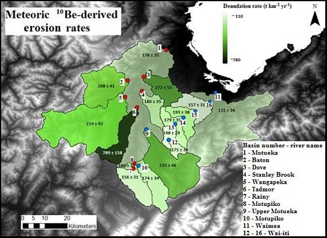
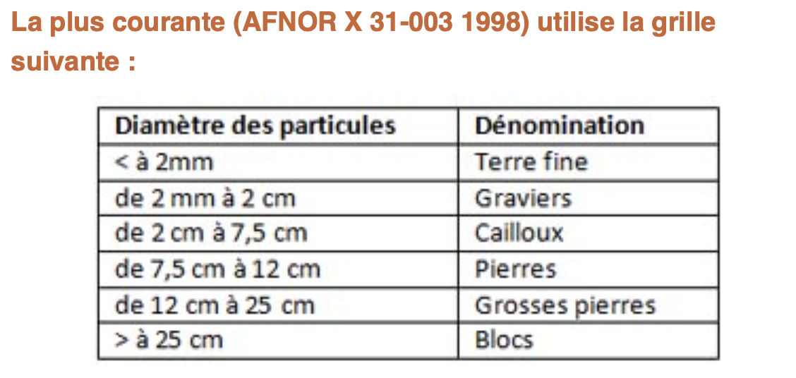
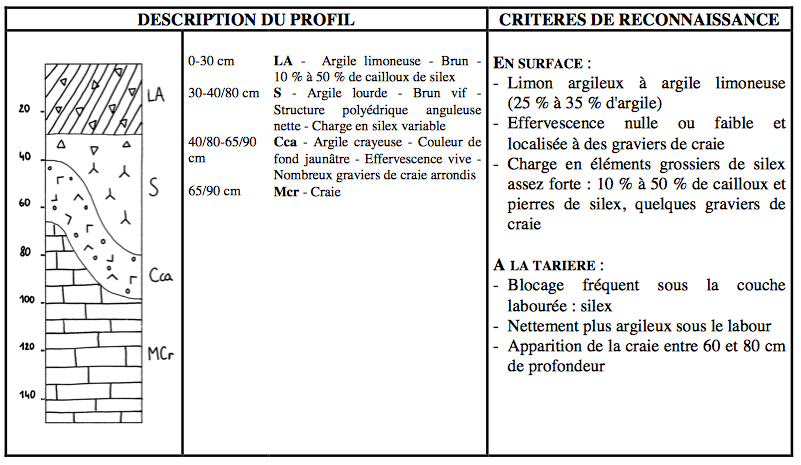

Accueil
Cours
Videos
À propos
Retour
QCM précédent
QCM suivant
QCM : Les sols - Auto-évaluation
À l'interface entre lithosphère, atmosphère, hydrosphère et biosphère ?
1. Qu'est-ce que l'humus ?
A) Le réseau de filaments produits par les champignons.
B) Les débris végétaux (feuilles mortes, branches, ...) et restes animaux (cadavres, déjections fécales, ...) accumulés à la surface du sol.
C) De la matière organique issue de la décomposition de débris végétaux ou animaux par les microbes du sol et autres organismes.
D) La terre végétale, de couleur généralement foncée (brune ou noire), dans un sol.
Commentaire:
L'humus est de la matière organique dégradée. Il résulte de la transformation de la matière organique (restes de plantes, d'animaux, excréments) par des organismes du sol comme les bactéries, les champignons et les vers de terre.
2. L'humus présente une affinité particulière avec certains minéraux en
A) Les carbonates.
B) Les quartz.
C) Les argiles.
D) Les oxydes et hydroxydes de fer.
Commentaire:
Ces associations avec les argiles et les oxydes de fer permettent à l'humus de mieux se stabiliser dans le sol, contribuant ainsi à la fertilité et à la rétention des nutriments.
3. Comment appelle-t-on les différentes zones, généralement horizontales,
A) Les penons.
B) Les pédons
C) Les solons
D) Les horizons
Commentaire:
Les horizons représentent les différentes couches qui composent un sol, chaque horizon ayant des caractéristiques spécifiques, comme la couleur, la texture et la composition.
4. Où trouve-t-on les sols actifs les plus anciens ?
A) Dans l'Himalaya.
B) Dans les îles volcaniques.
C) Dans le Massif Central.
D) A la surface des grands boucliers africains et sud-africains.
Commentaire:
Les grands boucliers africains et sud-africains, comme le Bouclier de l'Afrique de l'Ouest, sont des zones géologiques stables et anciennes où les sols ont eu le temps de se développer et de rester actifs pendant de longues périodes.
5. Le beryllium 10 (
10
Be) est un isotope du beryllium qui permet de dater la formation et l'érosion des sols. A quelle particularité doit-il cette utilisation ?

×
A) Car c'est élément radioactif, absent à l'intérieur de la Terre, mais qui est formé dans l'atmosphère ou à la surface des sols par l'action de rayons cosmiques venus de l'espace.
B) Car c'est un élément radioactif, initialement présent dans les roches crustales à des teneurs connues, mais qui est dégradé à la surface par les rayons cosmiques venus de l'espace. La mesure de sa quantité résiduelle permet donc de donner un âge aux sols.
Commentaire:
Le
10
Be est formé dans l'atmosphère sous l'influence des rayons cosmiques et peut être utilisé pour dater l'altération et l'érosion des sols.
6. Combien de temps faut-il en moyenne à la nature pour former un sol sur une roche nue ?
A) Environ une année.
B) Environ 100 000 ans.
C) Environ 10 000 ans.
D) Environ un siècle.
Commentaire:
Le processus de formation des sols varie en fonction des conditions environnementales, mais il est généralement long et dépend de l'altération des roches, de l'activité biologique et des conditions climatiques. Les sols européens actuels se sont formés depuis la fin de la période glaciaire.
7. Les chernozems font partie des sols les plus riches en matières organiques. Pour un chernozem comptant 4% en poids de matières organiques, quel est le pourcentage en volume de sa fraction organique ? On prend d1 = 0.2 pour la densité de la fraction organique, et d2 = 2 pour la densité de la fraction minérale.
A) 10%
B) 20%
C) 2%
D) 30%
Commentaire:
On écrit pour un kg de sol.
1 kg = m1 + m2
1/rho V = V1 / rho1 + V2 / rho2
1/rho V = V1 / rho1 + V2 / rho2
8. Dans un sol, selon la norme NF X 31-003, on désigne par
graviers
comme étant tous les éléments détritiques de taille comprise ...
×
A) Entre 2 mm et 2 cm.
B) Entre 50 µm et 2 mm.
C) Entre 3 cm et 5 cm.
D) Entre 2 mm et 5 cm.
Commentaire:
Selon la norme NF X 31-003, qui définit les différentes classes granulométriques des sols, les graviers sont classés comme étant tous les éléments détritiques dont la taille est comprise entre 2 mm et 2 cm. 
9. Dans un sol, selon la norme NF X 31-003, on appelle les
cailloux
tous les éléments détritiques ayant une taille comprise ...
A) Entre 2 cm et 5 cm.
B) Entre 2 cm et 7,5 cm.
C) Entre 1 cm et 5 cm.
D) Entre 1 cm et 10 cm.
Commentaire:
Selon la norme NF X 31-003, qui définit les différentes classes granulométriques des sols, les cailloux sont classés comme étant tous les éléments détritiques dont la taille est comprise entre 2 cm et 7.5 cm.
10. Dans un sol, selon la norme NF X 31-003, les éléments détritiques ayant une taille comprise entre 7,5 cm et 25 cm, sont appelés ...
A) Des blocs.
B) Des cailloux.
C) Des graviers.
D) Des pierres.
Commentaire:
Selon la norme NF X 31-003, qui définit les différentes classes granulométriques des sols, les pierres et les grosses pierres sont classées comme étant tous les éléments détritiques dont la taille est comprise entre 7.5 cm et 25 cm.
11. Dans un sol, selon la norme NF X 31-003, tous les éléments détritiques ayant une taille supérieure à 25 cm, sont appelés ...
A) Des cailloux.
B) Des graviers.
C) Des blocs.
D) Des pierres.
Commentaire:
Selon la norme NF X 31-003, qui définit les différentes classes granulométriques des sols, les blocs sont classés comme étant tous les éléments détritiques dont la taille est supérieure à 25 cm.
12. Pourquoi les cailloux reviennent-ils toujours quand on épierre un terrain ?
A) Parce les particules fines ont tendance à être entraînées dans les profondeurs du sol.
B) Parce les taupes et les vers de terre font remonter les cailloux en surface.
C) Parce que le ruissellement entraîne les particules fines et finit par faire affleurer en surface les cailloux qui étaient sous terre.
D) Parce que les alternances de gel et de dégel finissent par faire remonter les cailloux en surface.
Commentaire:
Lorsque l'eau de pluie ruisselle sur un terrain, elle entraîne avec elle les particules de sol les plus fines (argile, limon, sable). Ces particules sont plus facilement mises en suspension dans l'eau et transportées. Au fil du temps, ce processus d'érosion différentielle entraîne une diminution progressive de la couche superficielle fine du sol. Les cailloux, plus gros et plus lourds, restent en place et finissent par affleurer à la surface. Les alternances de gel et de dégel peuvent contribuer à déplacer de petites pierres, mais ils ne sont pas le facteur dominant.
13. Que peut-on dire sur les sols sableux ?
A) Ce sont des sols faciles à travailler.
B) Ce sont des sols bien drainés.
C) Ce sont des sols avec de bonnes capacités nutritives.
D) Ce sont des sols bien aérés.
E) Ce sont des sols avec de bonne capacité de rétention en eau.
Commentaire:
Les sols sableux présentent plusieurs caractéristiques distinctives :
Faciles à travailler : Leur texture grossière les rend légers et faciles à ameublir.
Bien drainés : Les espaces entre les grains de sable permettent à l'eau de s'infiltrer rapidement, évitant ainsi les problèmes d'engorgement.
Bien aérés : La structure poreuse du sol sableux favorise la circulation de l'air, essentielle pour la vie microbienne du sol.
Cependant, les sols sableux présentent aussi quelques inconvénients :
Faible capacité de rétention en eau : L'eau s'infiltre rapidement et est peu retenue par les grains de sable, ce qui peut entraîner un dessèchement rapide du sol.
Pauvres en éléments nutritifs : Les nutriments ont tendance à être lessivés par l'eau, ce qui rend ces sols moins fertiles.
En résumé, les sols sableux sont des sols légers, bien aérés et bien drainés, mais ils sont aussi pauvres en nutriments et ont une faible capacité de rétention en eau.
14. Quels sont les points négatifs des sols argileux ?
A) Ce sont des sols difficiles à travailler.
B) Ce sont des sols mal drainés.
C) Ce sont des sols qui retiennent mal les nutriments pour les plantes.
D) Ce sont des sols mal aérés.
E) Ce sont des sols avec de faibles capacités de rétention d'eau pour les plantes.
Commentaire:
Les sols argileux, bien qu'ayant certains avantages, présentent également plusieurs inconvénients qui peuvent rendre leur culture plus complexe :
Difficiles à travailler : Les particules d'argile sont très fines et collantes, ce qui rend le sol lourd et compact. Il est difficile à travailler, surtout lorsqu'il est humide, et forme des mottes tenaces.
Mal aérés : La structure compacte des sols argileux laisse peu d'espace pour la circulation de l'air, ce qui peut limiter l'activité des micro-organismes du sol et asphyxier les racines des plantes.
Mal drainés : L'eau a du mal à s'infiltrer dans un sol argileux, ce qui peut entraîner des problèmes de stagnation d'eau et favoriser le développement de maladies cryptogamiques.
Réchauffement lent au printemps : En raison de leur forte capacité de rétention en eau, les sols argileux mettent plus de temps à se réchauffer au printemps, retardant ainsi les semis et la croissance des plantes.
Bien que les sols argileux retiennent bien l'eau, cette eau n'est pas toujours disponible pour les plantes car elle est souvent liée aux particules d'argile.
En résumé, les principaux inconvénients des sols argileux sont liés à leur texture fine et compacte, qui limitent l'aération, le drainage et la facilité de travail du sol.
15. Pourquoi les sols argileux sont-ils difficiles à travailler ?
A) Ce sont des sols qui abrasent les outils quand ces sols sont gorgés d'eau.
B) Ce sont des terres lourdes et collantes quand ces sols sont humides.
C) Ce sont des sols durs en période de sécheresse.
Commentaire:
La difficulté de travailler un sol argileux est principalement liée à sa texture fine et à sa capacité à retenir l'eau, ce qui le rend lourd, collant et difficile à pénétrer lorsqu'il est humide. Et enfin, comme tous les sols, ils peuvent devenir durs en période de sécheresse.
16. Le test de consistance d'un échantillon de sol entre les doigts est un moyen rapide d'apprécier sa texture. Quelles affirmations ci-dessous sont justes ?
A) Les sols limoneux ont un toucher soyeux.
B) Les sols sableux ont un toucher rugueux.
C) Les sols argileux humides peuvent se laisser modeler sous forme de boudins, mais ceux-ci ne sont pas très stables.
Commentaire:
Le test de consistance permet de distinguer les sols en fonction de leur nature. Dans les affirmations ci-dessous, seulement celle concernant les sols argileux est inexacte: les sols argileux forment des boudins assez stables.
17. Quels sont les points négatifs des sols limoneux ?
A) Ce sont des sols assez sensibles au tassement.
B) Ce sont des terres lourdes.
C) Ce sont des terres qui usent les outils.
D) Ce sont des sols battants.
Commentaire:
Les sols limoneux, bien qu'étant généralement considérés comme fertiles, présentent quelques inconvénients liés à leur texture particulière :
Sols battants : Les particules de limon, lorsqu'elles sont soumises à l'impact de la pluie ou du passage, ont tendance à se tasser et à former une croûte dure en surface. Cette croûte empêche l'eau de pénétrer dans le sol, limite l'aération et peut entraver la germination des graines.
Sensibles au tassement : Le tassement du sol limoneux est favorisé par le passage de machines agricoles lourdes ou par le piétinement. Ce tassement réduit la porosité du sol, ce qui diminue l'infiltration de l'eau et l'aération.
Pourquoi les autres affirmations sont incorrectes ?
Ce sont des terres lourdes : Les sols limoneux ne sont pas aussi lourds que les sols argileux. Ils sont plutôt légers et faciles à travailler.
Ce sont des terres qui usent les outils : Les sols limoneux ne sont pas particulièrement abrasifs pour les outils.
En résumé, les principaux inconvénients des sols limoneux sont liés à leur fragilité et à leur tendance à se tasser, ce qui peut entraîner une diminution de la fertilité du sol à long terme.
18. Dans certaines régions du Bassin Parisien (comme la Picardie, par exemple), les sols peuvent contenir une quantité non négligeable de silex. Quel est le principal problème posé par ces silex pour l'agriculture ?

×
A) Ces silex gênent le drainage du sol.
B) Ces silex empêchent l'aération du sol.
C) Ces silex imperméabilisent la surface du sol.
D) Ces silex entraînent une usure prématurée des outils de travail du sol.
Commentaire:
L'usure prématurée des outils agricoles est le principal problème posé par les silex dans les sols du Bassin Parisien. Cette problématique a des conséquences économiques importantes pour les agriculteurs, en termes de coûts de maintenance et de productivité.
Corriger
Recommencer